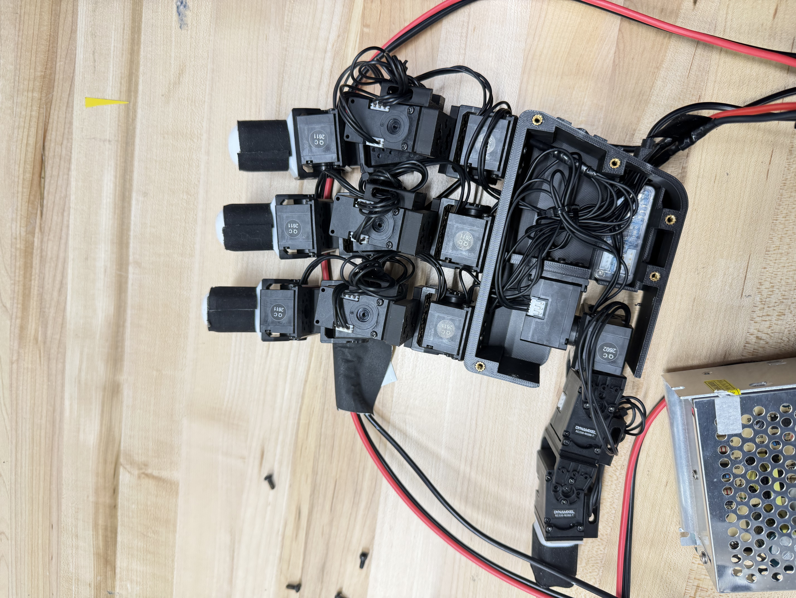
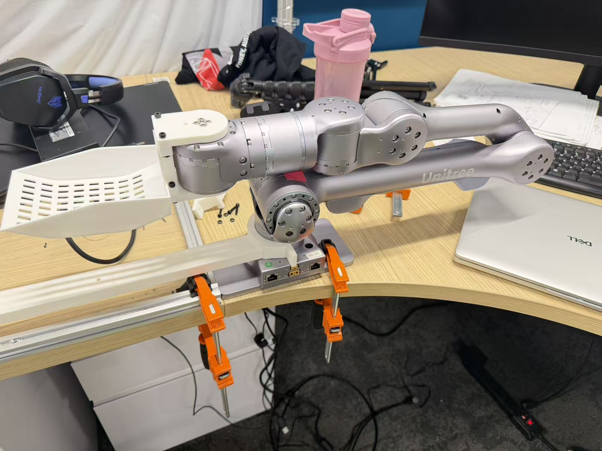

Research context
EgoX investigates cross-embodiment robotic manipulation: collecting demonstrations and exploring how manipulation knowledge can transfer across robotic platforms. My contribution focuses on the hardware and testing needed to support these experiments.
My contribution
I adapted an eight-motor robotic hand for UFactory xArm integration, modified CAD interfaces, fabricated a custom adapter, and integrated motors, drivers, and wiring. This work connects mechanical fit and assembly with the electrical and software interfaces required for physical tests.
Integration and testing
I develop Python-based grasp tests with data logging and pass/fail checks, conduct physical manipulation experiments, and investigate grasp instability during hardware and software integration. Repeated tests help evaluate system behavior after changes.

Current status
This is ongoing research. The photographs document the robotic hand and an additional arm setup in the project. The xArm integration work described above and the Unitree setup shown in the second photograph are distinct hardware configurations.
The work presented here covers my hardware integration and testing contributions; system-wide learning performance and final research outcomes are still in progress.